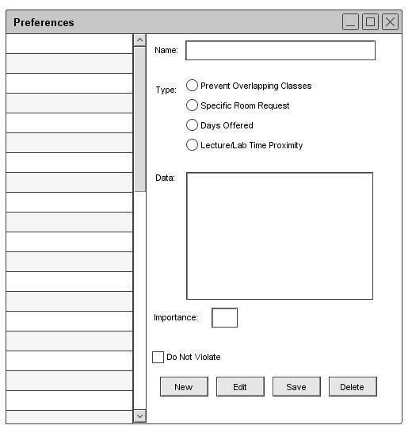
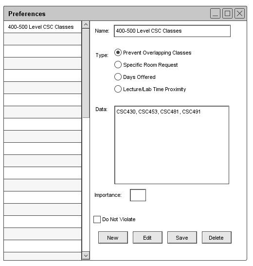

2.4.1.1. Add Preferences
When the user opens the Preferences window the user is presented with Figure 36. The database of Preferences is shown on the
left and at the bottom of the windows are the controls.

Figure 36: Empty Add Preference
To add a preference fill out the input options. Give the preference a name, select the type and input data as shown in
Figure 37. Once that is complete click "Add" and it will be added to the system and listed on the left hand list.

Figure 37: Filled in Add Preference
Prev: preferences
| Next: preferences-edit
| Up: functional
| Top: index